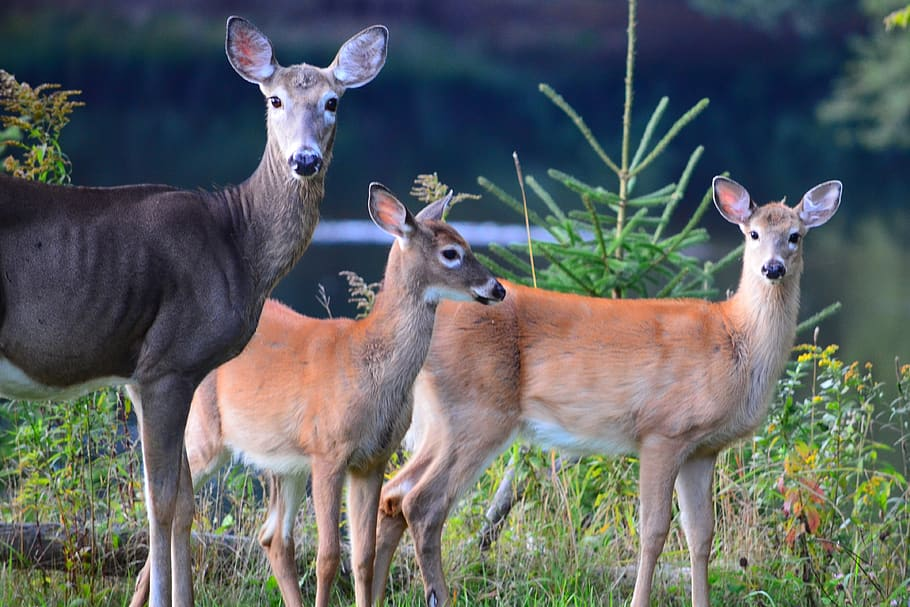

He is the Nodal officer to deal with all matters related to forest conservation Act 1980 ii) He will keep the details of forest lands granted and released for cultivation or other non forestry purposes, etc.,
He has the responsibilities of preserving the trees and their development. He is responsible for the supervision of the work for removal of trees/branches of trees, thus overall supervision of the work of Tree Management.
An assistant conservator of forests (ACF) is a proficient officer who helps to protect natural forests by performing important administrative duties in a forest department.
ange Forest officers are responsible for the forests, environment and wildlife-related issues of a Forest Range within a state or union territory of India. He or she is responsible for the execution of all works in the Range, with the help of subordinates: Deputy Forest Rangers (also known as Forest inspector)

Forest officers conserve, protect and manage forests, maintain the related revenue and expenditure and write and submit work reports. They delegate tasks to and oversee a subordinate staff of forest guards, forest watchers, forest section officers and forest deputy rangers.
Protective duty, guarding against fire and trespass, fighting fires and stopping trespass, as well as assisting the State authorities in the protection of game.